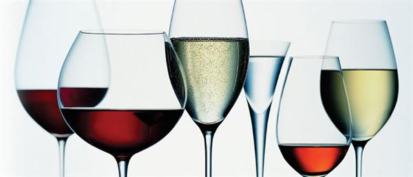
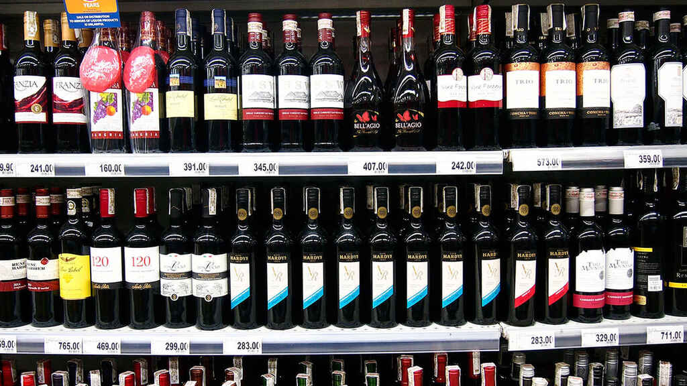

<!doctype html>
<html>
<head>
<meta charset="utf-8">
<title>El mundo del vino</title>
<meta http-equiv="Content-Type" content="text/html;charset=utf-8"/>
</head>

<body bgcolor="#7B0305">
</body>
</html>
<i> <b> <center> <p style="color: black; font-size: 50px">TIPOS DE VINO: VARIEDADES Y CLASIFICACIÓN</p> </center> </b> </i>
<center></center>
<p style="font-size: 20px">Un vino puede ser tinto o blanco, y de tonos amaderados o ácidos. La creación de vinos es una disciplina de extensas técnicas y que conlleva un largo proceso de confección y preparación antes de llegar al paladar de quienes lo disfrutan. Pero, ¿cuántos tipos de vino existen realmente y cómo se pueden clasificar? Estás a punto de entrar en un mundo de esencias y sabores únicos, así que adelante. </p>
<h2>Cuántos tipos de vinos existen.</h2>
<p style="font-size: 20px">Hablar de la variedad de vinos que existe actualmente es una tarea ardua y bastante diseccionada, y es que no podemos clasificar de una sola manera esta emblemática bebida, pues factores como la edad, el color, el sabor, los niveles de azúcar y el gas carbónico, se deben tener en cuenta para un análisis riguroso. </p>
<p style="font-size: 20px">Otro factor importante a la hora de elegir un vino, está relacionado con el tipo de comida que se quiere consumir. Para este proceso, llamado maridaje, se toman en cuenta los alimentos principales con el fin de equilibrar los sabores y las esencias con las notas del vino. </p>
<h2>Clasificación de los tipos de vinos</h2>
<p style="font-size: 20px">Comencemos a descubrir las clases de vino que existen mediante estas clasificaciones:</p>
<h2 style="color:black">Según su color:</h2>
<p style="font-size: 20px">La clasificación de vinos por color es la categoría más conocida en todo el mundo. Esto debido a que la tonalidad suele ser la carta de presentación de este tipo de bebida.</p>
<h3>Tinto</h3>
<p style="font-size: 20px">Es el tipo de vino más consumido en el mundo. Obtiene su color de los mostos o zumo de uvas tintas que lo componen. El contacto con pieles, semillas y raspones, también es necesario para obtener este característico color.</p>
<h3>Blanco</h3>
<p style="font-size: 20px">Este vino obtiene su color por la ausencia de hollejos, pues solo se fermenta el mosto a una temperatura controlada. Suele incluir uvas blancas o negras, lo que le da un tono amarillento.</p>
<h3>Rosado</h3>
<p style="font-size: 20px">También conocido como Rosé en Francia, este vino suele fabricarse solo con el mosto o zumo de ciertas uvas seleccionadas. Su tonalidad puede oscilar entre el rosa claro y el fuerte, o incluso violeta sin llegar al tono tinto. </p>
<center></center>

<center>
	<a href="Vino1.html"><b style="color: black; font-size: 50px">Siguiente</b></a>
	<a href="INDEX.html"></a>
</center>
